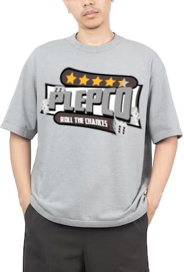

who are we
Welcome to Plepco, where a rewarding career awaits! Known for being one of the best-paying jobs in the industry, Plepco offers competitive salaries that truly reflect the value of its employees' hard work. But it’s not just about the paycheck—Plepco’s friendly and supportive staff make it a great place to work.
Here, you’ll find a collaborative environment where mutual respect and open communication thrive. Plepco also values professional growth, offering various training and advancement opportunities to keep you at the top of your game.
Flexibility is another key aspect of working at Plepco, with options for remote work and flexible hours that help maintain a healthy work-life balance. Plus, Plepco’s commitment to social responsibility and community service adds a meaningful dimension to your role.
what do we do
At Plepco, we’re all about innovation and creativity across a diverse range of fields. Our expertise spans several exciting areas:
Games: We develop cutting-edge video games that captivate and entertain players worldwide. From immersive storytelling to groundbreaking graphics, our games are designed to push the boundaries of interactive entertainment.
Websites: We create dynamic, user-friendly websites that enhance online presence and engagement. Our web development team specializes in designing and building sites that are visually appealing, highly functional, and tailored to meet our clients’ needs.
Clothes: Plepco’s fashion division brings fresh and trendy clothing options to the market. We focus on blending style with comfort, offering a range of apparel that suits various tastes and preferences.

Technology Solutions: Beyond games and fashion, we also provide innovative technology solutions. This includes software development, app creation, and cutting-edge tech services that address the evolving needs of businesses and consumers.
Media and Content Creation: Our media team produces high-quality content for various platforms, including video production, digital marketing, and creative design. We craft compelling narratives and visuals that engage audiences and drive results.
At Plepco, our diverse portfolio reflects our commitment to excellence and innovation in everything we do. Whether you’re a gamer, a fashion enthusiast, or a tech aficionado, Plepco has something exciting to offer
how do we make Games
Creating games at Plepco is a meticulous and innovative process that involves several key stages. Our goal is to deliver engaging and immersive experiences that captivate players around the world. Here’s a look at how we bring our games to life:
Conceptualization: Every game starts with a great idea. Our creative team brainstorms concepts, themes, and gameplay mechanics. We consider current market trends, player feedback, and our own unique vision to come up with ideas that stand out.
Pre-Production: Once we have a solid concept, we move into pre-production. This stage involves detailed planning, including writing the game’s story, designing characters, and mapping out levels. We create storyboards and concept art to visualize the game’s look and feel.
Prototyping: Before full-scale production begins, we develop prototypes to test our ideas. This involves creating basic versions of the game’s core mechanics to see how they work in practice. Prototyping helps us identify potential issues early and refine our approach.
Production: This is where the bulk of the work happens. Our developers, artists, and designers collaborate to build the game. Programmers write the code that brings the game to life, while artists create detailed graphics, animations, and environments. Sound designers and composers add music and sound effects to enhance the experience.
Testing: Quality assurance is crucial in game development. We conduct rigorous testing to find and fix bugs, ensure smooth gameplay, and balance game mechanics. This involves both automated testing and hands-on playtesting by our QA team and external testers.
Polishing: After initial testing, we refine the game based on feedback. This stage involves tweaking graphics, fine-tuning gameplay, and improving performance. Our goal is to create a polished product that meets our high standards and provides an enjoyable experience for players.
Launch: Once the game is complete, we prepare for launch. This includes marketing campaigns, creating trailers, and engaging with our community to build excitement. We release the game on various platforms, such as PC, consoles, and mobile devices.
Post-Launch Support: Our commitment to our games doesn’t end at launch. We continue to support our titles with updates, patches, and new content. We listen to player feedback and make improvements to enhance the game’s longevity and keep our community engaged.
At Plepco, every game we create is a labor of love, driven by passion and a dedication to excellence. Our collaborative approach and attention to detail ensure that each game we release is a testament to our creativity and technical prowess.
how to join
Joining Plepco is a straightforward and exciting process designed to ensure we find the best fit for both you and our team. Here’s how you can become a part of our dynamic company:
Explore Opportunities: Start by visiting our careers page on the Plepco website. Here, you’ll find a list of current job openings across various departments, from game development and web design to fashion and tech solutions. Review the positions to find one that aligns with your skills and interests.
Submit Your Application: Once you’ve identified a role that interests you, submit your application online. Be sure to include an updated resume, a cover letter tailored to the specific job, and any relevant portfolio work or references. This is your chance to showcase your talents and explain why you’re a great fit for Plepco
Initial Screening: Our recruitment team will review your application and, if your qualifications match our needs, you’ll be contacted for an initial screening. This might involve a phone or video interview to discuss your experience, skills, and motivation for wanting to join Plepco.
Interviews: If you pass the initial screening, you’ll be invited for a more in-depth interview. This may include one or more rounds of interviews with team members, managers, or other key stakeholders. We want to get to know you better and see how well you fit with our team and culture.
Assessment: Depending on the role, you might be asked to complete a skills assessment or a project relevant to the position. This helps us evaluate your practical abilities and approach to real-world challenges.
Offer and Onboarding: If everything goes well and you’re selected for the role, you’ll receive a formal job offer. Once you accept, we’ll guide you through the onboarding process to help you get settled and integrated into our team. This includes orientation sessions, introductions to your new colleagues, and any necessary training.
Start Your Journey: With everything in place, you’ll officially start your new role at Plepco. We’re excited to welcome you aboard and look forward to seeing the impact you’ll make!
Joining Plepco means becoming part of a forward-thinking company that values innovation, collaboration, and personal growth. If you’re ready to embark on a rewarding career with us, we look forward to receiving your application and discovering what you can bring to our team.
SIGN UP HERE!! TO SEE IF YOU JOIN THE GANG signup here - NOT WORKING RN
get into contacted
We’re always eager to hear from you, whether you have questions about our company, need support, or are interested in exploring career opportunities. Here’s how you can get in contact with us:
Website Contact Form: Visit our website and use the contact form available on our “Contact Us” page. Fill out the form with your details and message, and our team will get back to you as soon as possible.
Email: For general inquiries, you can email us at plepco.uk@gmail.com. For specific departments or issues, please refer to our website for targeted email addresses (e.g., plepco.uk@gmail.com for job-related questions or plepco.uk@gmail.com for customer support).
Social Media: Connect with us on social media platforms such as LinkedIn, Twitter, Facebook, and Instagram. Follow us for updates, news, and announcements, and feel free to send us a direct message or comment on our posts.
We look forward to connecting with you and providing the information or support you need. Your inquiries are important to us, and we aim to respond promptly and effectively.
why do we do this?
At Plepco, our passion for innovation and creativity drives everything we do. Our mission goes beyond simply developing products; it's about creating experiences that inspire, entertain, and make a difference. Here’s why we dedicate ourselves to our work:
Passion for Creativity: Creativity is at the core of Plepco. Whether it’s developing groundbreaking games, designing stunning websites, or crafting stylish clothing, we thrive on bringing imaginative ideas to life. Our team is driven by the joy of creating something unique and impactful.
Enhancing Lives: We believe in the power of our products to enhance people's lives. Our games provide entertainment and escapism, our websites facilitate connectivity and information, and our clothing offers style and comfort. Each product is designed to add value and improve the experiences of our customers.
Innovation: At Plepco, we’re committed to pushing the boundaries of what’s possible. We invest in cutting-edge technology and foster a culture of innovation to stay ahead in a rapidly evolving industry. Our goal is to lead the way with pioneering solutions and forward-thinking ideas.
Community and Connection: Building a sense of community and fostering connections is central to our mission. Through our games, we bring people together, enabling them to share experiences and create memories. Our commitment to social responsibility and community engagement reflects our desire to make a positive impact beyond our products.
mpowerment: We strive to empower our employees, customers, and communities. By providing opportunities for professional growth, creating products that inspire, and engaging in initiatives that support social and environmental causes, we aim to empower individuals to reach their full potential.
Quality and Excellence: We are dedicated to excellence in everything we do. Our rigorous standards and attention to detail ensure that every product we create meets the highest quality benchmarks. This dedication to quality is a testament to our respect for our customers and our commitment to delivering exceptional experiences.
Joy and Fulfillment: There is a profound sense of fulfillment that comes from seeing our ideas come to life and bring joy to others. Knowing that our work has a positive impact on people's lives is a constant source of motivation and satisfaction.
In essence, we do this because we love it. We are passionate about our work, inspired by the possibilities of innovation, and driven by a desire to make a positive difference. At Plepco, every project is an opportunity to create something extraordinary and to contribute to a better, more connected world.
OUR REVIEWS
M. - Game Developer
I’ve been with Plepco for three years now, and it’s been an incredible journey. The company’s commitment to innovation and creativity is inspiring. As a game developer, I get to work on exciting projects that push the boundaries of technology. Plus, the work environment is fantastic—everyone is so supportive and friendly. Plepco truly values its employees and provides numerous opportunities for growth and learning. The competitive salary and flexible work hours are just the icing on the cake!
--------------------------------------------------------------------
James T. - Web Designer
Working at Plepco has been a game-changer for my career. The projects are challenging and engaging, and I love the creative freedom we’re given. The team here is like a family; everyone is eager to help and collaborate. The company’s focus on work-life balance means I can manage my professional and personal life more effectively. Plepco’s dedication to innovation and excellence makes it an exciting place to work.
--------------------------------------------------------------------
Emily R. - Marketing Specialist
I joined Plepco a year ago, and I couldn’t be happier. The company’s culture is incredibly welcoming and inclusive. I’ve had the chance to work on some amazing marketing campaigns that have really showcased my skills and helped me grow professionally. The management team is supportive and always encourages us to think outside the box. Plus, the benefits package is excellent, making Plepco a great place to build a career.
--------------------------------------------------------------------
K. - Fashion Designer
Plepco is a fantastic place to work if you’re passionate about creativity and innovation. As a fashion designer, I’ve had the opportunity to design unique and trendy clothing that resonates with our customers. The collaborative environment and the support from my colleagues make it a joy to come to work every day. Plepco’s commitment to quality and excellence is evident in everything we do, and I’m proud to be part of this amazing team.
--------------------------------------------------------------------
Laura P. - Software Engineer
Being a part of Plepco has been a rewarding experience. The company’s emphasis on cutting-edge technology and continuous learning keeps me motivated and excited about my work. The team is incredibly talented and always willing to share knowledge and support each other. The flexible working hours and the ability to work remotely have made a huge difference in my work-life balance. Plepco’s dedication to its employees and its innovative approach make it a great place to work.
--------------------------------------------------------------------
At Plepco, we are proud of our diverse and talented team. Their passion and dedication are what drive our success and make Plepco a wonderful place to work. Join us and become a part of a company that values creativity, innovation, and collaboration.
SHOP - GOOD DEALS - OPENING SOON
$4.99 £4.82 €4.82 GREY SHIRT
$10.00 £9.99 €9.99 GREY SHIRT with logo
.png)
.png)
$10.00 £9.99 €9.99 GREY SHIRT with logo
$10.00 £9.99 €9.99 GREY SHIRT with logo